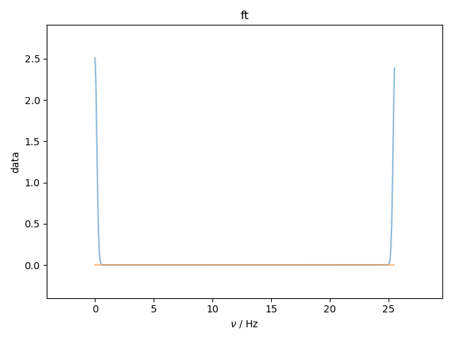
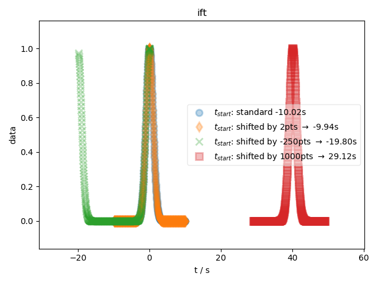

Note
Click here to download the full example code
Fourier Aliasing¶
Here, we show that we can view the Fourier transform as an infinitely repeat set of replicates (aliases, s.t. \(Ш( u/t_{dw})* ilde{f}( u)\)) and view any of those aliases (of width \(SW=1/t_{dw}\)) that we choose.
- 
- 
Out:
{'name': None, 'FT': {'t': True}, 'FT_freq_not_aliased': {'t': False}, 'FT_time_not_aliased': {'t': True}, 'FT_start_time': {'t': -10.019569471624266}}
is it safe? False
what is the initial desired startpoint? {'t': -10.019569471624266}
-----------------------
starting standard
what is the initial desired startpoint? {'t': -10.019569471624266}
and what is the actual first t index (t_start) after I ift?: t_start is -10.019569471624267 and dt is 0.039138943248532954
-----------------------
starting integral shift for 2
what is the initial desired startpoint? -10.019569471624266
now, I try to reset the startpoint to -9.941291585127201
my dt 0.039138943248532954 _get_ft_dt 0.03913909255232162
is it safe? False
And the actual t startpoint after ift? -9.941291585127203
the difference between the two? -1.7763568394002505e-15
-----------------------
-----------------------
starting integral shift for -250
what is the initial desired startpoint? -10.019569471624266
now, I try to reset the startpoint to -19.804305283757508
my dt 0.039138943248532954 _get_ft_dt 0.03913909255232162
is it safe? False
And the actual t startpoint after ift? -19.804305283757337
the difference between the two? 1.7053025658242404e-13
-----------------------
-----------------------
starting integral shift for 1000
what is the initial desired startpoint? -10.019569471624266
now, I try to reset the startpoint to 29.119373776908688
my dt 0.039138943248532954 _get_ft_dt 0.03913909255232162
is it safe? False
And the actual t startpoint after ift? 29.11937377690802
the difference between the two? -6.679101716144942e-13
-----------------------
# from JF noteobok sec:fourier_aliasing_test
from pylab import *
from pyspecdata import *
from pyspecdata.fourier.ft_shift import _get_ft_dt
fl = figlist_var()
t = r_[-10:10:512j]
t -= t[argmin(abs(t))] # to be sure that an index exactly equals zero
data = nddata(empty_like(t,dtype = complex128),[-1],['t']).setaxis('t',t)
data.set_units('t','s') # set the units to s, which are automatically converted to Hz upon FT
sigma = 1.0
data = data.fromaxis('t',lambda x: complex128(exp(-x**2/2./sigma**2)))
test_non_integral = False
data.ft('t',shift = test_non_integral)# this is required for the non-integral shift!
print(data.other_info)
print("is it safe?",data.get_ft_prop('t',['freq','not','aliased']))
fl.next('ft')
fl.plot(data, alpha=0.5)
fl.plot(data.runcopy(imag), alpha=0.5)
expand_x()
expand_y()
print("what is the initial desired startpoint?",data.get_prop("FT_start_time"))
# https://matplotlib.org/3.2.1/api/_as_gen/matplotlib.pyplot.plot.html
default_plot_kwargs = dict(alpha=0.3, lw=2, mew=2, ms=8, marker='o', ls='none')
print("-----------------------")
print("starting standard")
forplot = data.copy() # keep and re-use the gaussian
print("what is the initial desired startpoint?",forplot.get_prop("FT_start_time"))
forplot.ift('t')
#forplot = forplot['t':(-2,2)]
t_start = forplot.getaxis('t')[0]
fl.next('ift')
fl.plot(forplot,label = '$t_{start}$: standard %0.2fs'%t_start,**default_plot_kwargs)
if test_non_integral:
fl.next('ift -- non-integral')
fl.plot(forplot,label = '$t_{start}$: standard %0.2fs'%t_start,**default_plot_kwargs)
#fl.plot(forplot.runcopy(imag),label = 'I: standard',**default_plot_kwargs)
dt = diff(forplot.getaxis('t')[r_[0,1]]).item()
print("and what is the actual first t index (t_start) after I ift?: ", end=' ')
print("t_start is",t_start,"and dt is",dt)
symbols = iter(['d','x','s','o'])
for this_integer in [2,-250,1000]:
print("-----------------------")
print("starting integral shift for",this_integer)
forplot = data.copy() # keep and re-use the gaussian
print("what is the initial desired startpoint?",forplot.get_ft_prop('t',"start_time"))
new_startpoint = t_start + this_integer * dt
print("now, I try to reset the startpoint to",new_startpoint)
print("my dt",dt,"_get_ft_dt",_get_ft_dt(data,'t'))
forplot.ft_clear_startpoints('t',t = new_startpoint,f = 'current')
print("is it safe?",data.get_ft_prop('t',['freq','not','aliased']))
fl.next('ift')
forplot.ift('t')
print("And the actual t startpoint after ift? ",forplot.getaxis('t')[0])
print("the difference between the two?",forplot.getaxis('t')[0] - forplot.get_ft_prop('t',"start_time"))
default_plot_kwargs['marker'] = next(symbols)
fl.plot(forplot,label = '$t_{start}$: shifted by %0.0fpts $\\rightarrow$ %0.2fs'%(this_integer,new_startpoint),**default_plot_kwargs)
print("-----------------------")
#fl.plot(forplot.runcopy(imag),label = 'I: integral shifted',**default_plot_kwargs)
expand_x()
expand_y()
if test_non_integral:
symbols = iter(['d','x','s','o'])
for this_float in [0.5,0.25,10.75]:
print("-----------------------")
print("starting non-integral shift for",this_float)
forplot = data.copy() # keep and re-use the gaussian
print("what is the initial desired startpoint?",forplot.get_ft_prop('t',"start_time"))
print("is it safe?",data.get_ft_prop('t',['freq','not','aliased']))
new_startpoint = t_start + this_float * dt
print("now, I try to reset the startpoint to",new_startpoint)
forplot.ft_clear_startpoints('t',t = new_startpoint,f = 'current')
fl.next('ift -- non-integral')
print("is it safe?",data.get_ft_prop('t',['freq','not','aliased']))
forplot.ift('t')
print("And the actual t startpoint after ift? ",forplot.getaxis('t')[0])
print("the difference between the two?",forplot.getaxis('t')[0] - forplot.get_ft_prop('t',"start_time"))
default_plot_kwargs['marker'] = next(symbols)
default_plot_kwargs['markersize'] = 10.0
fl.plot(forplot,label = '$t_{start}$: shifted by %0.0fpts $\\rightarrow$ %0.2fs'%(this_float,new_startpoint),**default_plot_kwargs)
#fl.plot(forplot.runcopy(imag),label = 'I: integral shifted',**default_plot_kwargs)
#{{{ these are manually set for a nice view of the peak of the gaussian
xlim(-1,1)
ylim(0.9,1.04)
#}}}
fl.show('interpolation_test_150824.pdf')
Total running time of the script: ( 0 minutes 0.811 seconds)